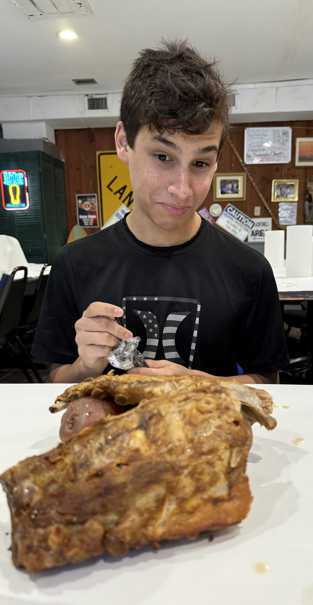

Image Credits
You can find the background image
here
You can find the image of unity (located in the hobbies page)
here
You can find the image of slinky manipulation
here
All other pictures were taken by Sanjay Shipley
Link Credits
You can find the certificate that I am taking
here
